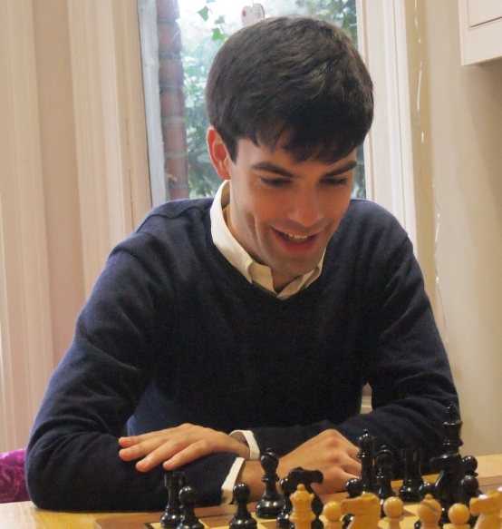

Chris has been playing chess competitively
since he was 8 and was the British Under 16 champion in 2005.
He moved back to London in July 2017, having spent the previous five years as a secondary school maths teacher in Bristol.
Whilst at university Chris organised chess clubs in local primary schools through the Chess Rocks and Warwickshire Children's University schemes.
Qualifications
- 2017 ECF Accredited Coach
- 2016 Certified by Bristol Safeguarding Children Board on completion of Safeguarding Awareness Training
- 2014 Qualified Teacher Status
- 2013 PGCE in Secondary Mathematics from University of Bristol
Chess Achievements
- 2016 British Universities Chess Association Team Championships co-commentator with Phil
- 2014 Downend and Fishponds Club Champion
- 2009 World Circular Chess Champion
- 2008-10 University of Warwick Chess Club Executive Member